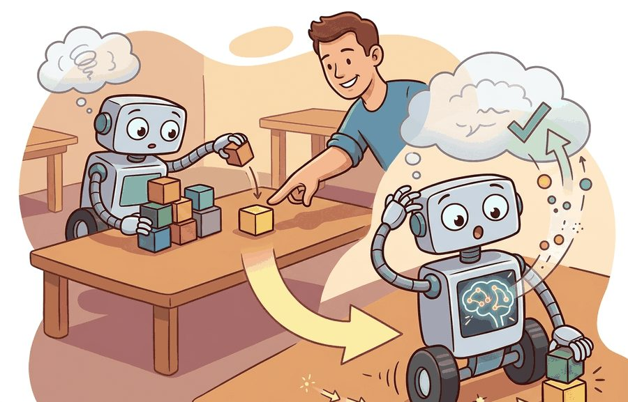
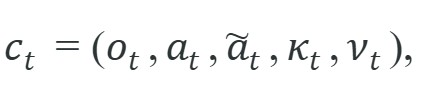
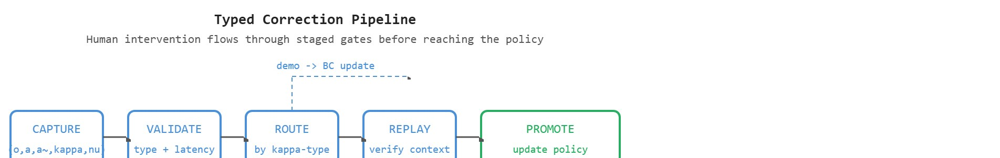

"The human said no, which was the cleanest label I received all week."
A Correction Log With Standards

This section assumes familiarity with the catastrophic forgetting problem introduced in section 57.2. The typed correction pipeline developed here feeds directly into the safety gating and evaluation protocols covered in section 57.4. The same provenance discipline recurs in Part XII alongside curriculum design and capstone evaluation in module 58.
A warehouse robot fumbles a fragile package; an operator grabs the arm and guides it to a safer grip. That ten-second intervention is the richest label the robot will receive all day, yet most deployed systems discard it as an unstructured event log entry. As embodied agents move from controlled pilots into real facilities and homes, the people supervising them are continuously generating high-fidelity corrections, and the only question is whether those signals are captured with enough semantic precision to drive learning. Here you will build a typed correction pipeline that distinguishes demonstrations, preference signals, relabels, and safety stops, and wire each type to the update rule it actually warrants.
Human correction is valuable because it couples action failure to targeted supervision. The gain is lost when corrections are stored as undifferentiated logs without semantics about what the human actually meant.
In one reported case (results of this magnitude are not guaranteed across tasks), a single semantic tag, the word "demonstration" attached to a grasp correction, let a warehouse system converge in under 40 interventions on a task that had needed roughly 8,000 random grasps. Figure 57.3A shows why: a human correction earns that 200-fold payoff only when its type and context are recorded explicitly rather than flattened into an undifferentiated event log. Human correction is not one thing. It can be a demonstration, preference signal, reset, rejection, relabel, or emergency stop. A single typed correction can replace thousands of autonomous rollouts. In reported manipulation studies (as of 2024), warehouse systems needed thousands of unsupervised grasps to learn a new object geometry, yet converged in tens of corrections once each intervention reached the right learner. That ratio is not a small constant factor. Without typed routing, a system needed roughly 8,000 random-exploration grasps to converge on a new object class. The same system with demonstration-type corrections routed directly to the behavior cloning update needed fewer than 40, a 200-fold reduction from one semantic tag. A useful correction record is

where $\tilde a_t$ is the corrected action, $\kappa_t$ is correction type, and $\nu_t$ is provenance metadata such as operator identity, delay, and confidence. Figure 57.3B traces how this record moves through the five staged gates, from capture to policy promotion, with each correction type branching to its own learner. The diagram below names the four correction types by their routing branch; the table further down defines what each type means and where it is best used, so treat the diagram as a preview and the table as the reference.

Provenance metadata matters because a bad policy update is hard to debug without knowing who corrected what, under what sensor conditions, and how quickly. On physical hardware, a bad update does not simply roll back. It propagates through every subsequent action the robot takes, possibly in contact with people or fragile objects. Teams that record who provided each correction, how long they waited before intervening, and which interface they used can audit supervision sources and quarantine low-quality signals before they reach the deployed policy.
Mechanically, the system records provenance by tagging each correction record at capture time with a structured metadata block. An operator ID links back to that person's historical correction quality. The robot's own clock timestamps the latency between the triggering action and the correction arrival, not the operator's device, so network skew cannot corrupt the measurement. Confidence fields either come from the operator through the interface or follow from behavioral signals such as hesitation time or edit count before submission. This block travels with the correction through storage, replay, and routing, so every downstream learner can filter on it before it incorporates the signal.
Think of provenance metadata like the label on a blood sample in a hospital. The vial alone tells you nothing useful: you need to know which patient, which draw time, and which technician collected it before any result is actionable. Strip that label off and reattach it later from memory, and the lab cannot safely use the sample regardless of how carefully the blood itself was handled. Correction records work the same way: the supervision signal is only trustworthy if its origin, timing, and quality markers were sealed to it at the moment of capture and never separated from it thereafter.
| Correction Type | Meaning | Best Downstream Use |
|---|---|---|
| demonstration | human supplies an alternate trajectory | behavior cloning or imitation update |
| preference | human ranks one behavior over another | reward or policy preference learning |
| relabel | human fixes state or object annotation | perception or estimator retraining |
| safety stop | human vetoes an action immediately | safety filter and hazard audit |
The correction-type table above stays abstract until you watch a single intervention move through it, so consider what happens when the wrong type slips through. A teleoperated correction during a failed grasp should not be merged blindly with a verbal preference or a safety stop. Those signals carry different supervision semantics.
def validate_correction(payload: dict[str, object]) -> dict[str, object]:
assert payload, "payload must not be empty"
return payload
correction = {
"type": "demonstration",
"context": "misaligned grasp on reflective carton",
"corrected_action": "lower wrist, re-center, close gripper later",
"used_for": "behavior cloning update candidate",
}
print(validate_correction(correction)){'type': 'demonstration', 'context': 'misaligned grasp on reflective carton', 'corrected_action': 'lower wrist, re-center, close gripper later', 'used_for': 'behavior cloning update candidate'}validate_correction asserts a non-empty payload, then the correction dictionary attaches an explicit type, context, and used_for so this demonstration record can be routed to the behavior cloning update rather than a generic log.The expected output is useful because it preserves the correction type. A demonstration can train a policy directly, while a safety stop may only label a hazard and should not be interpreted as an alternative action trajectory.
Treating a safety stop as a demonstration is the robot equivalent of interpreting a fire alarm as a dinner bell: technically both are signals, but routing them to the same handler produces a very different outcome than intended.
Trace one intervention through the five-stage pipeline with concrete values. CAPTURE records the record $c_t=(o_t,a_t,\tilde a_t,\kappa_t,\nu_t)$ as $o_t=$ "reflective carton at pose (0.42, -0.13, 0.88)", $a_t=$ "close gripper", $\tilde a_t=$ "lower wrist 3 cm, re-center, then close", $\kappa_t=$ demonstration, and $\nu_t=$ {operator: alice, latency_ms: 540, confidence: 0.9}. VALIDATE checks the type is a known enum and latency 540 ms is below the 800 ms threshold, so it passes. ROUTE reads $\kappa_t=$ demonstration and sends the record to the behavior cloning queue (not the hazard filter, not the reward model). REPLAY seeks the ROS 2 bag (a ROS 2 bag is a timestamped recording of all message topics from a robot run, so the exact sensor and action stream can be replayed later) to the decision boundary and confirms the stored context matches $o_t$, with a replay pass rate of 1.0. PROMOTE applies the BC update, then re-tests: the corrected grasp now succeeds and 7 of 8 neighboring reflective-carton poses also improve, so the update is kept. Had $\kappa_t$ instead been safety-stop, the same record would have skipped BC entirely and incremented the hazard filter count for that pose region.
When replaying a correction from a ROS 2 bag before promoting it to training, use ros2 bag play --start-offset <seconds> to seek directly to the decision boundary rather than replaying the full episode. This isolates the corrected state-action pair precisely, which matters because corrections recorded several seconds after the actual failure often carry hidden compensatory actions that contaminate the supervised signal. Filter for correction records where operator_latency_ms is below your team's threshold (typically 800 ms) before including a demonstration-type correction in a behavior cloning update; late demonstrations frequently reflect what the operator wished had happened rather than the optimal recovery.
Teleoperation logs, preference-label pipelines, dataset cards, and replay harnesses are the right tools here because they preserve provenance. The shortcut is worthwhile only if the correction schema keeps type, context, and target use explicit.
Untyped correction logs create supervision ambiguity. A stop command, preference cue, and teleoperated trajectory should not be treated as interchangeable labels.
A common assumption is that "online adaptation" means human corrections are applied to the robot's policy immediately and continuously, so more corrections always produce a better-behaved robot in real time. This is wrong in embodied AI because unvalidated corrections applied immediately to physical hardware can introduce unsafe behaviors that propagate through every subsequent contact with real objects and people, with no undo. Corrections must first be typed, replayed against stored context, filtered by operator latency and quality metrics, and routed to the appropriate learner before any update reaches the deployed policy. The correct mental model is a staged pipeline: capture, validate, route, replay, then promote, with safety gating at each step rather than a direct write from operator input to policy weights.
A manipulator operator may sometimes provide a full corrective trajectory, sometimes just veto a dangerous action, and sometimes relabel object identity after a perception mistake. Those three corrections should route to behavior cloning, safety filtering, and perception retraining respectively.
Tesla's data engine treats every Autopilot disengagement, where a driver grabs the wheel or brakes to override the system, as a typed correction signal rather than a discarded event. Each override is captured with full sensor context and the human's corrective action, then routed into a curated training set that retrains the perception and planning stacks on exactly the situations the deployed policy mishandled. This is the typed-correction pipeline at fleet scale: the human veto becomes the highest-priority label in the next shadow-mode training run (shadow mode: the updated model runs alongside the deployed one and its decisions are logged for comparison, but it does not yet control the vehicle).
Goal: measure how correction typing and operator latency affect adaptation quality. Tools: Python, Gymnasium (LunarLander-v2), a small PyTorch policy, and pygame for keyboard intervention capture. Steps: run a partially trained policy, let yourself override its action with the arrow keys, and log each intervention as a structured record with fields type (demonstration, safety-stop, relabel), state, corrected_action, and operator_latency_ms timestamped from the environment step counter rather than the keypress wall-clock. Replay the demonstration-type records into a behavior cloning update and discard or separately handle safety-stops. What to vary: (1) the latency threshold above which demonstrations are dropped (try 0, 100, 300, 500 ms-equivalent steps), and (2) whether all corrections are merged untyped versus routed by type. What to observe: plot post-update landing success rate against the latency threshold and compare typed versus untyped routing. You should see typed routing converge in far fewer interventions, and demonstrations captured after long delays actively degrade success because they encode compensatory rather than optimal recovery actions.
Direction 1: Intervention-efficient online Reinforcement Learning from Human Feedback (RLHF) for embodied agents. Recent work has shifted from passive correction logging toward active querying: the agent solicits human input only when its epistemic uncertainty (the model's own uncertainty about which action is correct, as opposed to noise in the sensors) about a contact-critical action crosses a threshold. The SOAR framework (Shi et al., RSS 2024, Stanford Robot Learning Lab) demonstrates that uncertainty-gated correction requests on manipulation tasks reduce the number of human interventions needed by roughly 60 percent relative to periodic correction sampling, while maintaining the same policy improvement rate. The key design choice is tying the query trigger to calibrated ensemble disagreement over contact-force predictions rather than image-space entropy.
So far: instead of logging every human correction, an agent can actively ask for one only when it is uncertain about a contact-critical action, which recent work shows cuts the number of needed interventions substantially while keeping the same learning progress.
Direction 2: Foundation-model-assisted correction interpretation. Large vision-language models (VLMs) are being used to parse unstructured operator corrections (spoken instructions, gesture traces, mixed teleoperation) into the typed correction records that downstream learners need. RT-2-inspired pipelines (Google DeepMind, 2024-2025) treat the VLM as a correction-type classifier and relabeler, converting raw intervention streams into structured (type, corrected action, context) tuples before routing. The open challenge is that VLM parsing latency currently exceeds real-time requirements on edge hardware, forcing corrections to be processed offline and reintegrated asynchronously.
Direction 3: Continual preference learning with non-stationary human raters. Operators change their implicit reward function as they gain experience, become fatigued, or observe new failure modes. Work from the Center for Human-Compatible AI and collaborators (2024-2025) on reward model updating under rater drift shows that treating the human preference model as fixed over a deployment lifetime leads to systematic misalignment after roughly 30 operator shifts. Preference models must be updated continually alongside the policy, with provenance metadata used to down-weight stale operator signal.
Open problem for PhD students: How should a robot policy decide, in real time on physical hardware, whether a new operator correction is consistent with prior corrections from the same shift, prior corrections from different operators, and the current safety constraints, before allowing any weight update? Existing methods handle consistency checking offline or ignore operator identity entirely. A computationally tractable online consistency gate that runs within a 50 ms control cycle and flags conflicting supervision before it reaches the policy update step remains an open problem with direct safety implications.
Can you list three correction types and explain how each should influence a later update? If not, the correction pipeline is still too coarse to support reliable adaptation.
A correction without a type is not a label; it is noise wearing the shape of supervision. Correction value also depends on delay and context. A perfect corrective trajectory recorded after several hidden compensations may be less informative than a prompt intervention at the exact decision boundary that mattered.
For that reason, strong embodied correction datasets usually log synchronized video or sensor replay, robot state, commanded action, operator latency, interface modality, and post hoc outcome tags. ROS bag capture, teleoperation dashboards, preference-label queues, and dataset-card tooling are practical because they let teams recover exactly what the human observed and which learner should consume the signal. Without that routing discipline, human correction becomes expensive anecdote, not reusable supervision.
One concrete stack captures raw interaction in ROS 2, aligns the corrected snippets with PyTorch training examples, and tracks update quality in Weights and Biases or TensorBoard. It matters because one intervention may feed imitation learning, preference modeling, or safety monitoring, depending on its type. The artifact boundary is therefore the typed correction record plus replayable context, not a loose folder of operator notes.
Another important distinction is between corrective data collected for local repair and corrective data collected for generalization. If an operator rescues one failed grasp, the immediate goal may be a narrow patch for that shelf geometry or object pose. If the same failure pattern repeats across many shifts, the useful artifact becomes a curated correction set with clear inclusion rules, operator-agreement checks, and slice labels that let the team test whether the update transfers beyond the original incident. That is why the correction ledger should preserve task family, embodiment, and failure taxonomy rather than only the final corrected action.
Online adaptation from human corrections fails in at least three distinct regimes. First, when the distribution shifts faster than the correction rate: if a warehouse robot encounters a new class of objects every hour but operators can only provide corrections for a small fraction of failures, the model chases a moving target and never stabilizes. Second, when corrections are sparse relative to the policy's exploration horizon: a single corrective trajectory for a rare failure mode may not generalize if the policy has dozens of similar states it has never been corrected on, so apparent improvement on the corrected case masks persistent failure on neighboring cases. Third, when operator fatigue or interface friction reduces correction quality late in a shift: latency increases, demonstrations become approximate, and the provenance metadata becomes unreliable. The practical signal is a correction quality metric (operator latency, post-hoc outcome tag agreement, replay pass rate) that decays visibly before adaptation quality collapses, giving the team time to intervene before bad supervision contaminates the policy.
Human correction becomes high-quality training signal only when its type, context, and intended use are logged precisely. Concretely, "human correction as data" means every intervention is stored as a $c_t=(o_t,a_t,\tilde a_t,\kappa_t,\nu_t)$ record, not a free-text log entry, so it can be routed to behavior cloning, preference learning, perception retraining, or the safety filter without a human re-reading it first.
Define a schema for human corrections to a drone landing policy. Include at least three correction types and state how each one should be used in a later update.
Beginner (weekend): Build a typed correction logger for a Gymnasium CartPole or LunarLander agent that records each human keyboard intervention as a structured record with fields for correction type, operator latency, and state context, then replays the log to retrain the policy with behavior cloning. The key challenge is capturing precise timestamps from the environment clock rather than the keyboard event to avoid latency bias in the supervision signal.
Intermediate (1-2 weeks): Implement a correction routing pipeline for a PyBullet or MuJoCo manipulation task using LeRobot's teleoperation interface, where demonstration-type corrections feed a behavior cloning update and safety-stop-type corrections populate a separate hazard filter, with Weights and Biases logging correction quality metrics such as operator latency and post-update replay pass rate. The key challenge is designing a schema that keeps correction type, provenance metadata, and replayable sensor context tightly coupled through the full pipeline from capture to policy update.
Kirkpatrick, J. et al. Overcoming catastrophic forgetting in neural networks. PNAS, 2017.
Use for regularization-based retention and its assumptions.
Lopez-Paz, D. and Ranzato, M. Gradient Episodic Memory for Continual Learning. NeurIPS, 2017.
Use for replay-constrained updates and task-stream evaluation.
Next, continue with Section 57.4, where continual learning is gated by safety and evaluated over time.